New work
Describe the outcome. You review the plan before any agent starts.
Add search and status filters, a dark mode that follows the system, and a Spanish translation to the task board. Reject blank titles. Document it in the README.

CodexSigned inClaude CodeSigned in
 Gemini CLISigned in
Gemini CLISigned in
Cursor AgentSigned in
OpenCodeProvider connected AntigravitySigned in
AntigravitySigned in−4+
Up to 8. Tasks that share files never run together.Build plan
Plan Ready
6tasks6vendors3waves4at once0shared files in a wave
Wave 1 · in parallel
Search + status filter model
src/model.mjs · test/model.test.mjs
Codex▾
Dark mode
src/style.css · src/app.js
Claude Code▾
Spanish translation
src/i18n/ · src/index.html
Gemini CLI▾Filter bar component
src/components/
Cursor Agent▾
Wave 2 · after dark mode
Blank-title validation
src/app.js · test/validation.test.mjs
OpenCode▾
Shares src/app.js with Dark mode, so it starts on Claude Code's result.
Wave 3 · after all
README examples
README.md
Antigravity▾Each agent works in its own isolated copyChecks: node --test per task and on the combined result
Run 6 agents